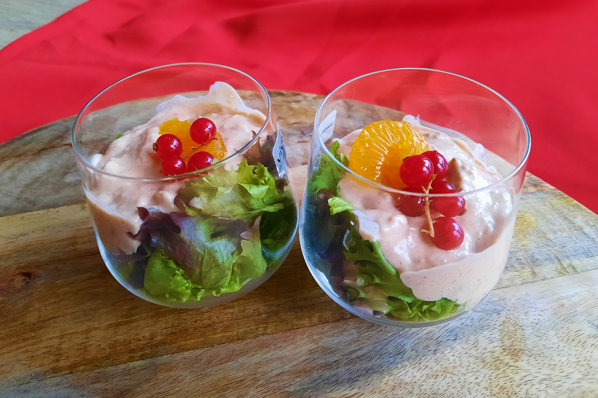

tonijncocktail
Vega te maken door de echte tonijn te vervangen door een vega variant.

Bereidingsduur: 15 minuten
Aantal personen: 4
Ingrediënten:
1 blikje (vega) tonijn
0,5 krop krulsla
enkele rode bessen
2 mandarijntjes
10 eetlepels mayonaise
2 eetlepels ketchup
1 eetlepel citroensap
10 milliliter whisky
2 theelepels tabasco
1 eetlepel worcestersaus
1 theelepel paprikapoeder
1 blikje (vega) tonijn
0,5 krop krulsla
enkele rode bessen
2 mandarijntjes
10 eetlepels mayonaise
2 eetlepels ketchup
1 eetlepel citroensap
10 milliliter whisky
2 theelepels tabasco
1 eetlepel worcestersaus
1 theelepel paprikapoeder
Instructies:
1. Maak de cocktailsaus door de mayonaise, ketchup, citroensap, whisky, tabasco, worcestersaus en paprikapoeder goed door elkaar te mixen. Meng daarna met de tonijn.
2. Scheur de sla en leg deze in de cocktailglazen en leg het mengsel erop.
3. Als garnering leg je er gepelde mandarijnschijfjes en granaatappelpitjes of rode bessen op.
1. Maak de cocktailsaus door de mayonaise, ketchup, citroensap, whisky, tabasco, worcestersaus en paprikapoeder goed door elkaar te mixen. Meng daarna met de tonijn.
2. Scheur de sla en leg deze in de cocktailglazen en leg het mengsel erop.
3. Als garnering leg je er gepelde mandarijnschijfjes en granaatappelpitjes of rode bessen op.